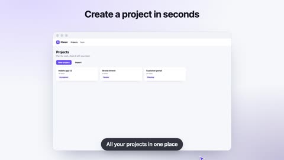
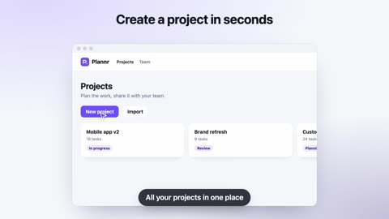
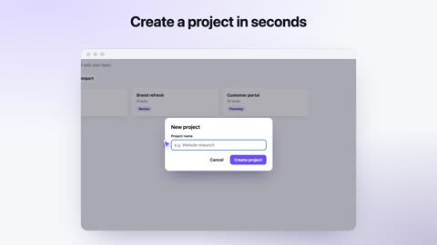
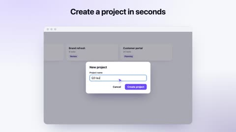
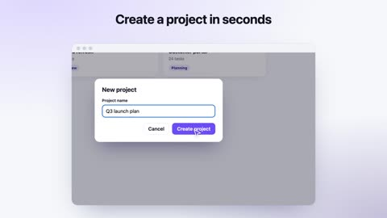
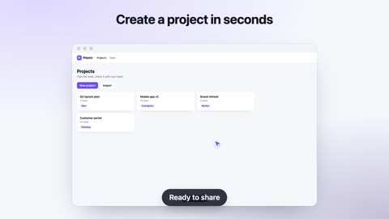
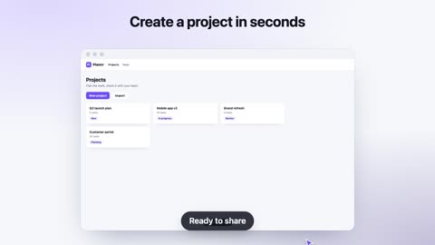
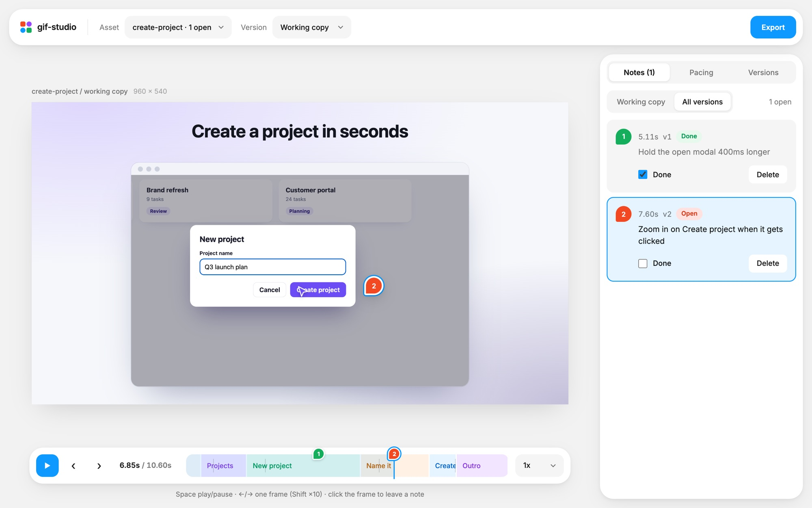
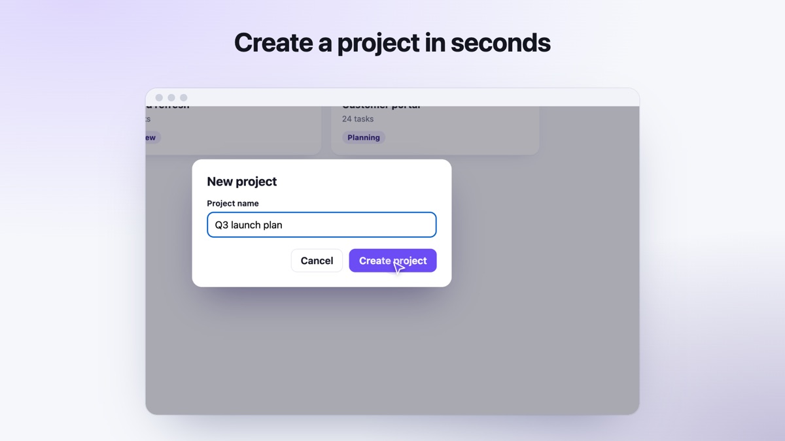
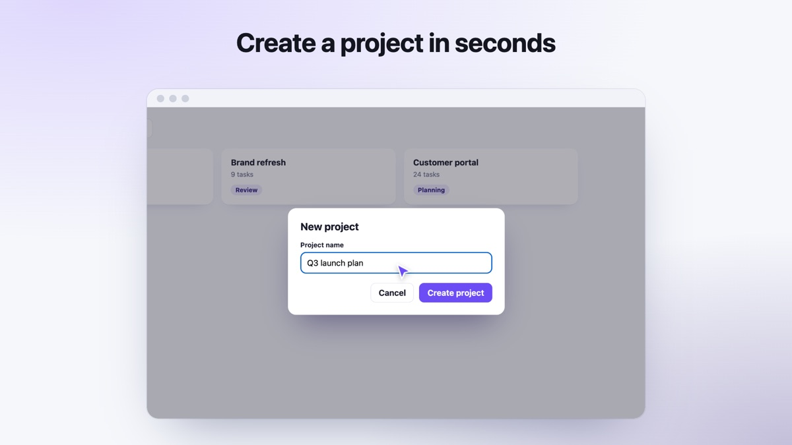

Comments pinned to a moment
Click the frame, write one instruction, paste a reference image.
Your AI agent runs your app, records the flows that matter and drops them as looping GIFs and MP4s. You comment on frames. It ships v2.
npx gif-studio init
Every render is seekable to the frame, so you can stop on any moment and pin a comment to it. Drag the playhead.







Times from one real run on the demo app, on a laptop. Your agent does every step. You only show up to comment.
The studio opens next to your agent. Pin a comment on any frame, tune pacing per section, compare versions, then hand it back.

Click the frame, write one instruction, paste a reference image.
Faster intro, longer hold on the result. No re-recording.
16:9, 1:1, 9:16 and 4:5. Vertical crops pan to each click.
Every command says what to run next, so any agent can drive it.
"ok": true,
"summary": "Recorded create-project, 4 plates",
"next": ["gif-studio render create-project"]Registered for Cursor and Claude Code by init.
Say “promote v2” and it lands in final/, with the older versions kept next to it.
Tell your agent “apply notes from v1”. It edits the scene, renders v2 and marks each comment covered. Every version keeps its own GIF, MP4 and stills.


Free and open source. Runs on your machine, nothing is uploaded.
npx gif-studio init